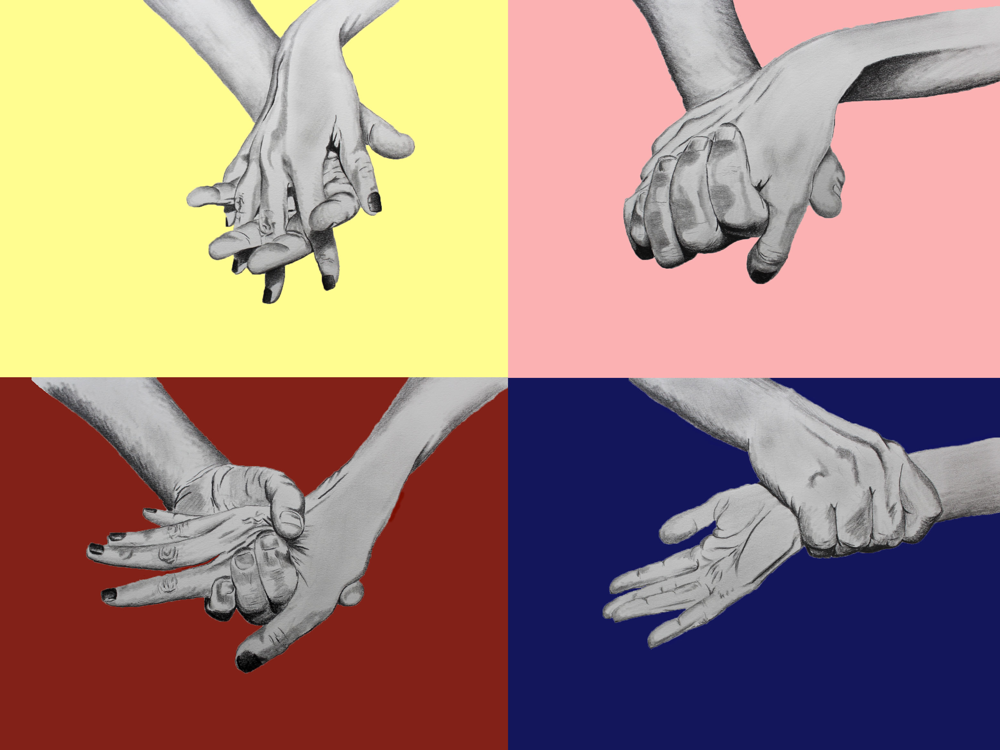

This piece was for my first year Drawing final. The assignment was very broad, we were just given the title "Utopia vs. Dystopia" and told to give it our own meaning and visualization. I've always been enamored with drawing hands, so I wanted to include that in my piece. I played with lightness and darkness of color as well as psychological associations of color that were further exaggerated by the images laid on top of them, hence, the loving hands on pastel yellow and pink and the abusive hands on the deep red and blue. I really loved the freedom we were given with this project as well as the simple but dramatic and effective route I decided to take with it.